| Condition | n |
|---|---|
| Control | 142 |
| Strategies & Outcomes | 138 |
| Trust & Perspectives | 139 |
01_Analyses
Overview
| Condition | Description |
|---|---|
| Active Control | Self-Explanatory |
| Treatment 1 | “Mindset” Articles |
| Treatment 2 | “Prescriptive” Articles |
Click to See Treatment 1 Articles

Click to See Treatment 2 Articles

Relationship Attitudes
Code
alpha_result <- psych::alpha(data[, c("manipCheck2", "manipCheck1")], check.keys=TRUE)
kable(alpha_result$total)| raw_alpha | std.alpha | G6(smc) | average_r | S/N | ase | mean | sd | median_r | |
|---|---|---|---|---|---|---|---|---|---|
| 0.5362481 | 0.5376399 | 0.3676522 | 0.3676522 | 1.162816 | 0.0451264 | 3.189459 | 1.258288 | 0.3676522 |
| manipCheck1 | |||
| Predictors | Estimates | CI | p |
| (Intercept) | 5.69 | 4.04 – 7.33 | <0.001 |
| Condition [Strategies & Outcomes] |
-0.17 | -0.58 – 0.24 | 0.410 |
| Condition [Trust & Perspectives] |
-0.56 | -0.97 – -0.15 | 0.008 |
| insurance Patient | -0.02 | -0.20 – 0.15 | 0.783 |
| ladder | -0.13 | -0.27 – 0.01 | 0.066 |
| income | 0.01 | -0.16 – 0.18 | 0.874 |
| workInsurancePercent 1 | -0.01 | -0.02 – 0.00 | 0.173 |
| yearsWork 1 | -0.02 | -0.04 – -0.01 | 0.005 |
| Observations | 336 | ||
| R2 / R2 adjusted | 0.070 / 0.051 | ||
| contrast | effect.size | SE | df | lower.CL | upper.CL |
|---|---|---|---|---|---|
| Control - Strategies & Outcomes | 0.1111285 | 0.1347821 | 328 | -0.1540180 | 0.3762749 |
| Control - Trust & Perspectives | 0.3596298 | 0.1356179 | 328 | 0.0928392 | 0.6264205 |
| Strategies & Outcomes - Trust & Perspectives | 0.2485014 | 0.1338427 | 328 | -0.0147970 | 0.5117998 |
| contrast | estimate | SE | df | t.ratio | p.value |
|---|---|---|---|---|---|
| Control - Strategies & Outcomes | 0.1727417 | 0.2094012 | 328 | 0.8249321 | 0.6878241 |
| Control - Trust & Perspectives | 0.5590205 | 0.2096760 | 328 | 2.6661151 | 0.0218964 |
| Strategies & Outcomes - Trust & Perspectives | 0.3862787 | 0.2075021 | 328 | 1.8615652 | 0.1516176 |
| as.factor(Condition) | mean | sd |
|---|---|---|
| Control | 3.634783 | 1.596764 |
| Strategies & Outcomes | 3.418803 | 1.587881 |
| Trust & Perspectives | 3.117647 | 1.541386 |
| manipCheck2 | |||
| Predictors | Estimates | CI | p |
| (Intercept) | 4.93 | 3.41 – 6.44 | <0.001 |
| Condition [Strategies & Outcomes] |
-0.09 | -0.47 – 0.29 | 0.652 |
| Condition [Trust & Perspectives] |
-0.44 | -0.82 – -0.06 | 0.023 |
| insurance Patient | -0.12 | -0.28 – 0.03 | 0.126 |
| ladder | -0.19 | -0.32 – -0.06 | 0.004 |
| income | 0.01 | -0.14 – 0.17 | 0.870 |
| workInsurancePercent 1 | 0.00 | -0.01 – 0.01 | 0.419 |
| yearsWork 1 | -0.02 | -0.03 – -0.00 | 0.036 |
| Observations | 336 | ||
| R2 / R2 adjusted | 0.066 / 0.046 | ||
| contrast | effect.size | SE | df | lower.CL | upper.CL |
|---|---|---|---|---|---|
| Control - Strategies & Outcomes | 0.0607338 | 0.1347331 | 328 | -0.2043163 | 0.3257839 |
| Control - Trust & Perspectives | 0.3082165 | 0.1354248 | 328 | 0.0418057 | 0.5746273 |
| Strategies & Outcomes - Trust & Perspectives | 0.2474827 | 0.1338398 | 328 | -0.0158100 | 0.5107754 |
| contrast | estimate | SE | df | t.ratio | p.value |
|---|---|---|---|---|---|
| Control - Strategies & Outcomes | 0.0869442 | 0.1928489 | 328 | 0.4508408 | 0.8940664 |
| Control - Trust & Perspectives | 0.4412309 | 0.1931020 | 328 | 2.2849626 | 0.0593248 |
| Strategies & Outcomes - Trust & Perspectives | 0.3542868 | 0.1911000 | 328 | 1.8539343 | 0.1539468 |
| as.factor(Condition) | mean | sd |
|---|---|---|
| Control | 3.208696 | 1.53609 |
| Strategies & Outcomes | 3.034188 | 1.42594 |
| Trust & Perspectives | 2.739496 | 1.38063 |
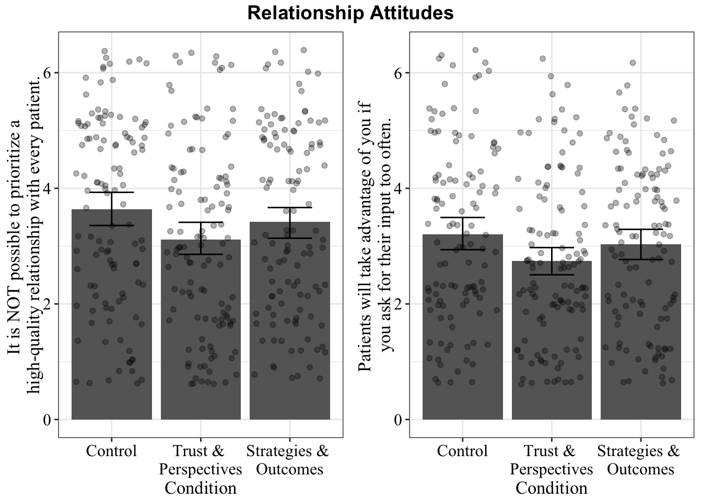
Lay Theories
raw_alpha std.alpha G6(smc) average_r S/N ase mean sd
0.8742522 0.8742821 0.8247831 0.6986232 6.954318 0.01066372 3.411681 1.013224
median_r
0.6978029| raw_alpha | std.alpha | G6(smc) | average_r | S/N | ase | mean | sd | median_r |
|---|---|---|---|---|---|---|---|---|
| 0.8742522 | 0.8742821 | 0.8247831 | 0.6986232 | 6.954318 | 0.0106637 | 3.411681 | 1.013224 | 0.6978029 |
| layTheores_combined | ||||
| Predictors | Estimates | std. Error | CI | p |
| (Intercept) | 3.58 | 0.14 | 3.31 – 3.85 | <0.001 |
| Condition [Strategies & Outcomes] |
-0.13 | 0.13 | -0.39 – 0.13 | 0.332 |
| Condition [Trust & Perspectives] |
-0.44 | 0.13 | -0.70 – -0.18 | 0.001 |
| yearsWork 1 | 0.00 | 0.01 | -0.01 – 0.01 | 0.903 |
| Observations | 346 | |||
| R2 / R2 adjusted | 0.034 / 0.026 | |||
| contrast | effect.size | SE | df | lower.CL | upper.CL |
|---|---|---|---|---|---|
| Control - Strategies & Outcomes | 0.1282432 | 0.1319723 | 342 | -0.1313363 | 0.3878228 |
| Control - Trust & Perspectives | 0.4445789 | 0.1329946 | 342 | 0.1829885 | 0.7061693 |
| Strategies & Outcomes - Trust & Perspectives | 0.3163357 | 0.1318823 | 342 | 0.0569331 | 0.5757382 |
| contrast | estimate | SE | df | t.ratio | p.value |
|---|---|---|---|---|---|
| Control - Strategies & Outcomes | 0.1280312 | 0.1316632 | 342 | 0.9724151 | 0.5948123 |
| Control - Trust & Perspectives | 0.4438440 | 0.1316857 | 342 | 3.3704787 | 0.0024045 |
| Strategies & Outcomes - Trust & Perspectives | 0.3158127 | 0.1311094 | 342 | 2.4087733 | 0.0435372 |
| as.factor(Condition) | mean | sd |
|---|---|---|
| Control | 3.551643 | 0.9394982 |
| Strategies & Outcomes | 3.446860 | 0.9072980 |
| Trust & Perspectives | 3.191847 | 0.8963860 |
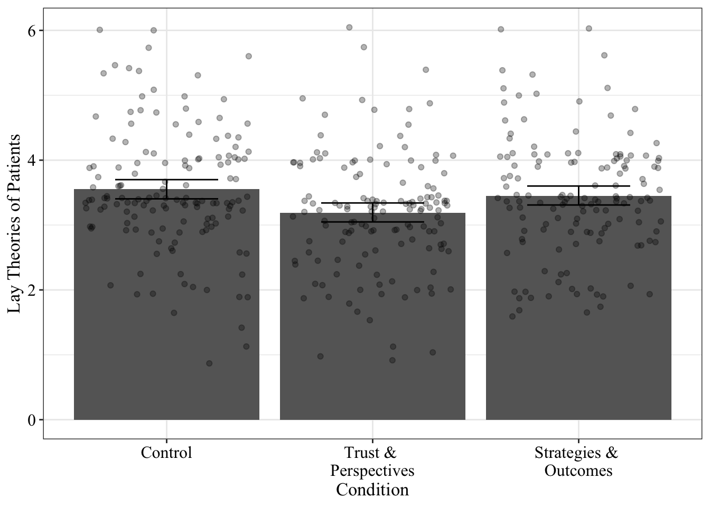
Individual Outcomes
| layTheories_1 | |||
| Predictors | Estimates | CI | p |
| (Intercept) | 2.90 | 1.70 – 4.10 | <0.001 |
| Condition [Strategies & Outcomes] |
0.01 | -0.29 – 0.31 | 0.942 |
| Condition [Trust & Perspectives] |
-0.37 | -0.67 – -0.07 | 0.016 |
| insurance Patient | 0.03 | -0.10 – 0.15 | 0.673 |
| ladder | -0.05 | -0.15 – 0.05 | 0.289 |
| income | 0.08 | -0.05 – 0.20 | 0.225 |
| workInsurancePercent 1 | 0.00 | -0.00 – 0.01 | 0.263 |
| yearsWork 1 | 0.00 | -0.01 – 0.01 | 0.776 |
| Observations | 336 | ||
| R2 / R2 adjusted | 0.036 / 0.016 | ||
| contrast | estimate | SE | df | t.ratio | p.value |
|---|---|---|---|---|---|
| Control - Strategies & Outcomes | -0.0111524 | 0.1522327 | 328 | -0.0732587 | 0.9970455 |
| Control - Trust & Perspectives | 0.3673979 | 0.1524325 | 328 | 2.4102337 | 0.0434274 |
| Strategies & Outcomes - Trust & Perspectives | 0.3785503 | 0.1508521 | 328 | 2.5094139 | 0.0335558 |
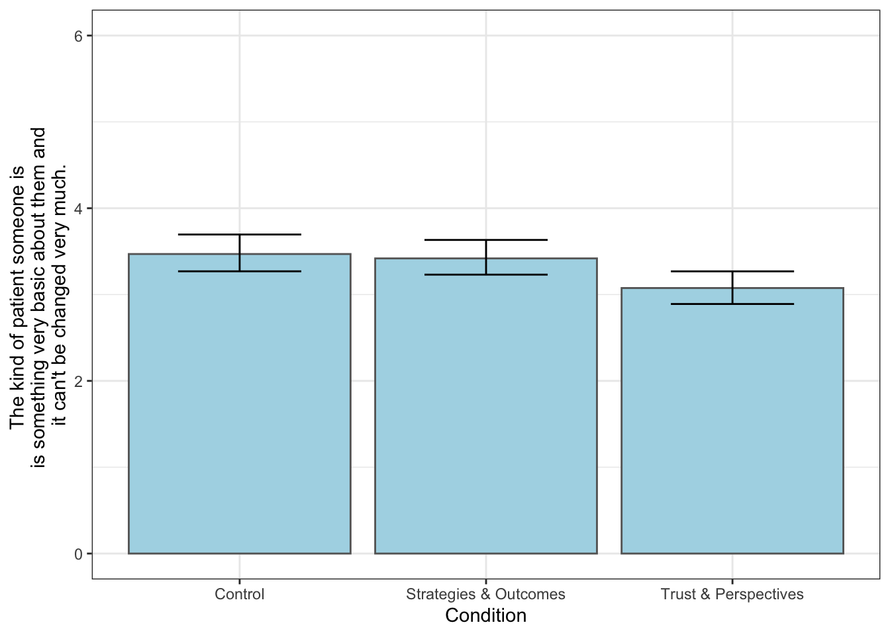
| layTheories_2 | |||
| Predictors | Estimates | CI | p |
| (Intercept) | 3.18 | 2.00 – 4.37 | <0.001 |
| Condition [Strategies & Outcomes] |
-0.12 | -0.41 – 0.18 | 0.439 |
| Condition [Trust & Perspectives] |
-0.39 | -0.68 – -0.09 | 0.011 |
| insurance Patient | -0.02 | -0.14 – 0.11 | 0.801 |
| ladder | -0.04 | -0.14 – 0.06 | 0.407 |
| income | 0.09 | -0.03 – 0.21 | 0.150 |
| workInsurancePercent 1 | 0.00 | -0.00 – 0.01 | 0.309 |
| yearsWork 1 | 0.00 | -0.01 – 0.01 | 0.854 |
| Observations | 336 | ||
| R2 / R2 adjusted | 0.034 / 0.013 | ||
| contrast | estimate | SE | df | t.ratio | p.value |
|---|---|---|---|---|---|
| Control - Strategies & Outcomes | 0.1166764 | 0.1507110 | 328 | 0.7741729 | 0.7191489 |
| Control - Trust & Perspectives | 0.3853834 | 0.1509089 | 328 | 2.5537489 | 0.0298098 |
| Strategies & Outcomes - Trust & Perspectives | 0.2687070 | 0.1493442 | 328 | 1.7992455 | 0.1714203 |
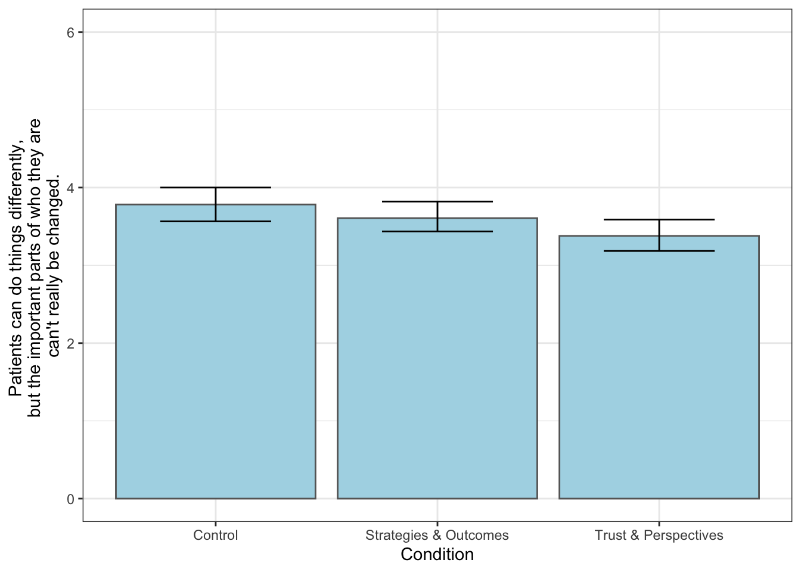
| layTheories_3 | |||
| Predictors | Estimates | CI | p |
| (Intercept) | 2.97 | 1.77 – 4.16 | <0.001 |
| Condition [Strategies & Outcomes] |
-0.11 | -0.41 – 0.19 | 0.469 |
| Condition [Trust & Perspectives] |
-0.50 | -0.80 – -0.20 | 0.001 |
| insurance Patient | -0.03 | -0.16 – 0.09 | 0.586 |
| ladder | -0.03 | -0.13 – 0.07 | 0.527 |
| income | 0.12 | -0.01 – 0.25 | 0.076 |
| workInsurancePercent 1 | 0.00 | -0.01 – 0.01 | 0.641 |
| yearsWork 1 | -0.00 | -0.01 – 0.01 | 0.905 |
| Observations | 333 | ||
| R2 / R2 adjusted | 0.049 / 0.029 | ||
| contrast | estimate | SE | df | t.ratio | p.value |
|---|---|---|---|---|---|
| Control - Strategies & Outcomes | 0.1104337 | 0.1523607 | 325 | 0.7248173 | 0.7489612 |
| Control - Trust & Perspectives | 0.4957830 | 0.1524915 | 325 | 3.2512171 | 0.0036254 |
| Strategies & Outcomes - Trust & Perspectives | 0.3853494 | 0.1502559 | 325 | 2.5646202 | 0.0289585 |
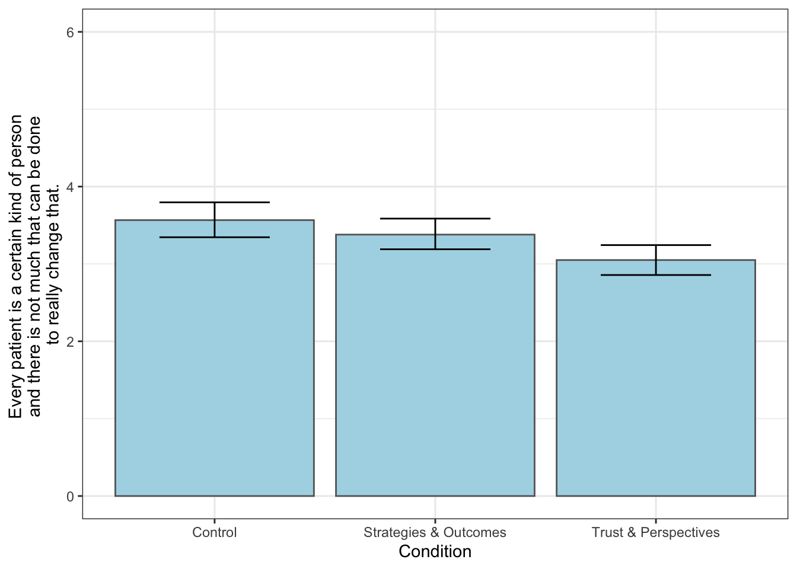
Vignette
Main Outcomes
| lazy | |||
|---|---|---|---|
| Predictors | Estimates | CI | p |
| (Intercept) | 1.46 | 0.34 – 2.58 | 0.010 |
| Condition [Strategies & Outcomes] |
-0.11 | -0.35 – 0.13 | 0.358 |
| Condition [Trust & Perspectives] |
-0.10 | -0.34 – 0.13 | 0.386 |
| strike | 0.76 | 0.65 – 0.87 | <0.001 |
| ladder | 0.00 | -0.08 – 0.08 | 0.965 |
| income | 0.03 | -0.06 – 0.13 | 0.496 |
| workInsurancePercent 1 | 0.00 | -0.01 – 0.01 | 0.767 |
| yearsWork 1 | -0.00 | -0.01 – 0.01 | 0.530 |
| insurance Patient | 0.05 | -0.05 – 0.15 | 0.298 |
| trainingWhere | -0.29 | -0.75 – 0.18 | 0.231 |
| Random Effects | |||
| σ2 | 0.52 | ||
| τ00 ResponseId | 0.54 | ||
| ICC | 0.51 | ||
| N ResponseId | 336 | ||
| Observations | 672 | ||
| Marginal R2 / Conditional R2 | 0.128 / 0.572 | ||
| contrast | effect.size | SE | df | lower.CL | upper.CL |
|---|---|---|---|---|---|
| Control - Strategies & Outcomes | 0.1534917 | 0.1670366 | 327 | -0.1751103 | 0.4820937 |
| Control - Trust & Perspectives | 0.1450169 | 0.1672707 | 327 | -0.1840455 | 0.4740793 |
| Strategies & Outcomes - Trust & Perspectives | -0.0084748 | 0.1655219 | 327 | -0.3340970 | 0.3171473 |
| contrast | effect.size | SE | df | lower.CL | upper.CL |
|---|---|---|---|---|---|
| strike1 - strike2 | -1.053847 | 0.0824241 | 362.6243 | -1.215936 | -0.8917578 |
| vars | n | mean | sd | median | trimmed | mad | min | max | range | skew | kurtosis | se |
|---|---|---|---|---|---|---|---|---|---|---|---|---|
| 1 | 697 | 2.63845 | 1.089981 | 3 | 2.627907 | 1.4826 | 1 | 5 | 4 | -0.0001934 | -0.7502654 | 0.041286 |
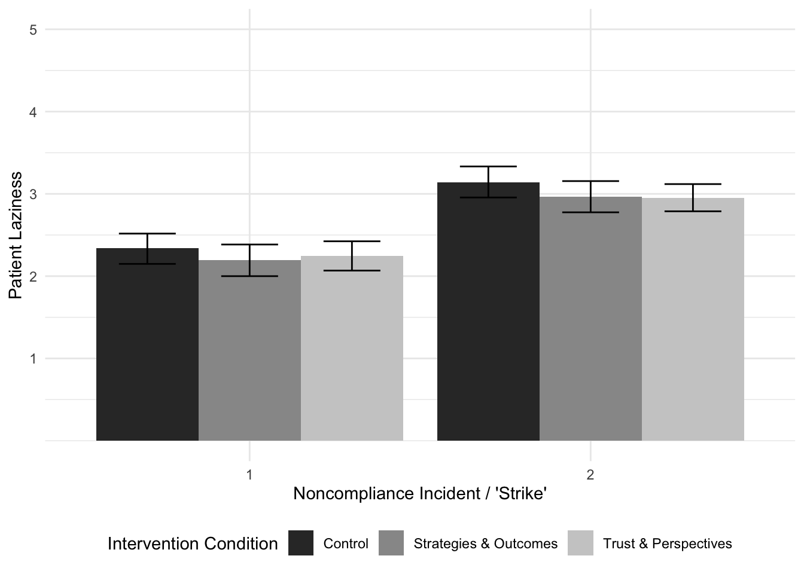
| honest | |||
|---|---|---|---|
| Predictors | Estimates | std. Error | p |
| (Intercept) | 4.73 | 0.45 | <0.001 |
| Condition [Strategies & Outcomes] |
-0.05 | 0.09 | 0.596 |
| Condition [Trust & Perspectives] |
-0.16 | 0.09 | 0.093 |
| strike | -0.29 | 0.05 | <0.001 |
| insurance Patient | 0.00 | 0.04 | 0.927 |
| ladder | 0.05 | 0.03 | 0.092 |
| income | -0.01 | 0.04 | 0.853 |
| workInsurancePercent 1 | 0.00 | 0.00 | 0.154 |
| yearsWork 1 | -0.02 | 0.00 | <0.001 |
| trainingWhere | -0.17 | 0.19 | 0.357 |
| Random Effects | |||
| σ2 | 0.38 | ||
| τ00 ResponseId | 0.30 | ||
| ICC | 0.45 | ||
| N ResponseId | 336 | ||
| Observations | 672 | ||
| Marginal R2 / Conditional R2 | 0.104 / 0.503 | ||
| contrast | effect.size | SE | df | lower.CL | upper.CL |
|---|---|---|---|---|---|
| Control - Strategies & Outcomes | 0.0815497 | 0.1537504 | 327 | -0.2209149 | 0.3840144 |
| Control - Trust & Perspectives | 0.2589212 | 0.1541196 | 327 | -0.0442699 | 0.5621123 |
| Strategies & Outcomes - Trust & Perspectives | 0.1773714 | 0.1524667 | 327 | -0.1225679 | 0.4773108 |
| contrast | effect.size | SE | df | lower.CL | upper.CL |
|---|---|---|---|---|---|
| strike1 - strike2 | 0.480595 | 0.0782775 | 368.9865 | 0.3266692 | 0.6345209 |
| vars | n | mean | sd | median | trimmed | mad | min | max | range | skew | kurtosis | se |
|---|---|---|---|---|---|---|---|---|---|---|---|---|
| 1 | 697 | 4.278336 | 0.859366 | 5 | 4.400716 | 0 | 1 | 5 | 4 | -1.026843 | 0.3845395 | 0.0325508 |
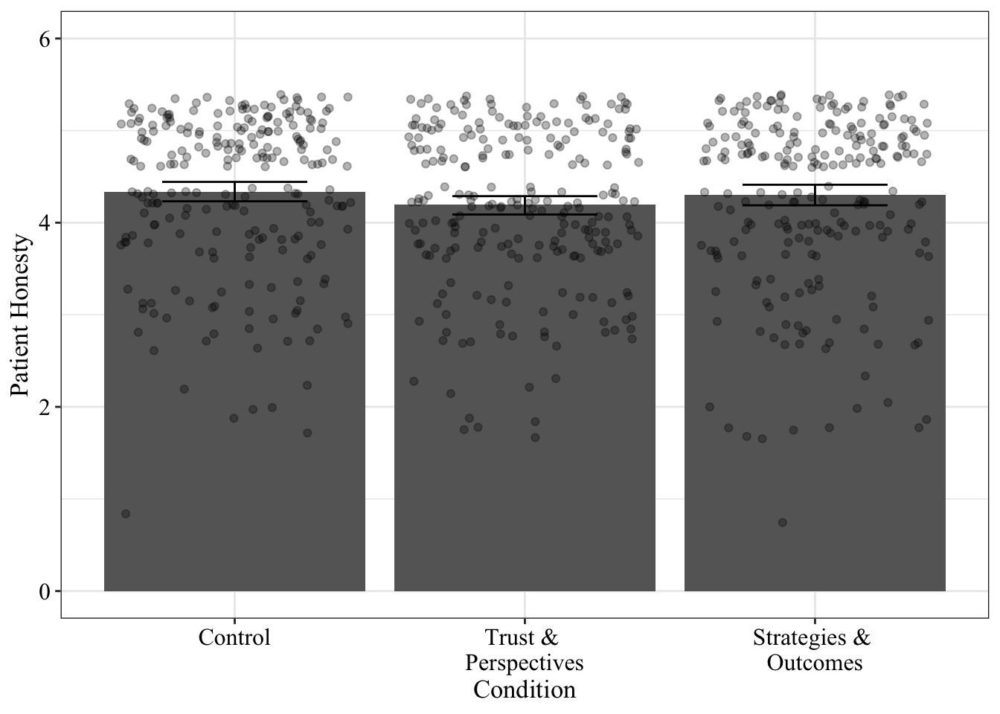
| exaggerate | |||
|---|---|---|---|
| Predictors | Estimates | std. Error | p |
| (Intercept) | 2.76 | 0.43 | <0.001 |
| Condition [Strategies & Outcomes] |
-0.03 | 0.09 | 0.773 |
| Condition [Trust & Perspectives] |
-0.09 | 0.09 | 0.322 |
| strike | 0.49 | 0.05 | <0.001 |
| insurance Patient | 0.03 | 0.04 | 0.389 |
| ladder | -0.08 | 0.03 | 0.006 |
| income | -0.00 | 0.04 | 0.957 |
| workInsurancePercent 1 | -0.00 | 0.00 | 0.348 |
| yearsWork 1 | 0.01 | 0.00 | 0.009 |
| trainingWhere | -0.08 | 0.18 | 0.663 |
| Random Effects | |||
| σ2 | 0.42 | ||
| τ00 ResponseId | 0.24 | ||
| ICC | 0.36 | ||
| N ResponseId | 336 | ||
| Observations | 672 | ||
| Marginal R2 / Conditional R2 | 0.111 / 0.432 | ||
| contrast | effect.size | SE | df | lower.CL | upper.CL |
|---|---|---|---|---|---|
| strike1 - strike2 | -0.7452182 | 0.0798317 | 378.208 | -0.9021878 | -0.5882486 |
| vars | n | mean | sd | median | trimmed | mad | min | max | range | skew | kurtosis | se |
|---|---|---|---|---|---|---|---|---|---|---|---|---|
| 1 | 697 | 2.786227 | 0.8603225 | 3 | 2.801431 | 0 | 1 | 5 | 4 | -0.0897107 | 0.2952473 | 0.032587 |
| Condition | mean |
|---|---|
| Control | 2.833333 |
| Strategies & Outcomes | 2.806867 |
| Trust & Perspectives | 2.720339 |
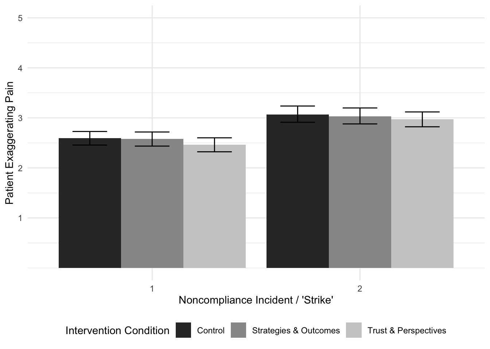
| frustrating | |||
|---|---|---|---|
| Predictors | Estimates | std. Error | p |
| (Intercept) | 3.11 | 0.52 | <0.001 |
| Condition [Strategies & Outcomes] |
-0.22 | 0.11 | 0.047 |
| Condition [Trust & Perspectives] |
-0.31 | 0.11 | 0.005 |
| strike | 0.32 | 0.04 | <0.001 |
| ladder | 0.03 | 0.04 | 0.486 |
| income | 0.04 | 0.05 | 0.431 |
| workInsurancePercent 1 | 0.00 | 0.00 | 0.409 |
| yearsWork 1 | -0.00 | 0.00 | 0.334 |
| insurance Patient | -0.01 | 0.05 | 0.755 |
| trainingWhere | -0.11 | 0.22 | 0.626 |
| Random Effects | |||
| σ2 | 0.34 | ||
| τ00 ResponseId | 0.49 | ||
| ICC | 0.59 | ||
| N ResponseId | 336 | ||
| Observations | 672 | ||
| Marginal R2 / Conditional R2 | 0.056 / 0.616 | ||
| contrast | effect.size | SE | df | lower.CL | upper.CL |
|---|---|---|---|---|---|
| Control - Strategies & Outcomes | 0.3745146 | 0.1887984 | 327 | 0.0031018 | 0.7459274 |
| Control - Trust & Perspectives | 0.5288472 | 0.1893479 | 327 | 0.1563534 | 0.9013410 |
| Strategies & Outcomes - Trust & Perspectives | 0.1543326 | 0.1869152 | 327 | -0.2133754 | 0.5220406 |
| contrast | effect.size | SE | df | lower.CL | upper.CL |
|---|---|---|---|---|---|
| strike1 - strike2 | -0.5449269 | 0.0785961 | 354.9779 | -0.6994993 | -0.3903545 |
| contrast | estimate | SE | df | t.ratio | p.value |
|---|---|---|---|---|---|
| Control - Strategies & Outcomes | 0.2168189 | 0.1091386 | 327 | 1.9866375 | 0.1171033 |
| Control - Trust & Perspectives | 0.3061671 | 0.1092954 | 327 | 2.8012814 | 0.0148701 |
| Strategies & Outcomes - Trust & Perspectives | 0.0893482 | 0.1081834 | 327 | 0.8258958 | 0.6872250 |
| vars | n | mean | sd | median | trimmed | mad | min | max | range | skew | kurtosis | se |
|---|---|---|---|---|---|---|---|---|---|---|---|---|
| 1 | 697 | 3.791966 | 0.9229163 | 4 | 3.881932 | 1.4826 | 1 | 5 | 4 | -0.815323 | 0.6781798 | 0.0349579 |
| Condition | mean | sd |
|---|---|---|
| Control | 3.973684 | 0.9429593 |
| Strategies & Outcomes | 3.738197 | 0.9215571 |
| Trust & Perspectives | 3.669491 | 0.8805712 |
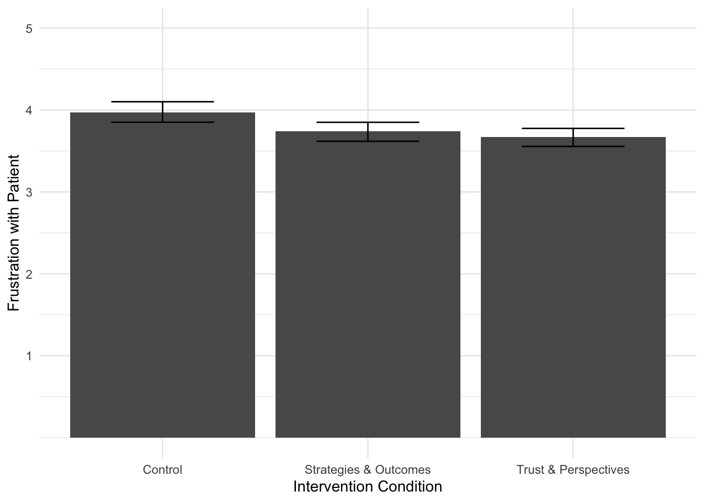
| givingUp | |||
|---|---|---|---|
| Predictors | Estimates | CI | p |
| (Intercept) | 1.31 | 0.20 – 2.42 | 0.020 |
| Condition [Strategies & Outcomes] |
-0.04 | -0.27 – 0.20 | 0.751 |
| Condition [Trust & Perspectives] |
-0.16 | -0.39 – 0.08 | 0.182 |
| strike | 0.71 | 0.61 – 0.82 | <0.001 |
| ladder | -0.00 | -0.08 – 0.08 | 0.950 |
| income | -0.00 | -0.10 – 0.10 | 0.987 |
| workInsurancePercent 1 | -0.00 | -0.01 – 0.00 | 0.697 |
| yearsWork 1 | -0.01 | -0.02 – 0.00 | 0.170 |
| insurance Patient | 0.03 | -0.07 – 0.13 | 0.554 |
| trainingWhere | -0.05 | -0.52 – 0.41 | 0.828 |
| Random Effects | |||
| σ2 | 0.48 | ||
| τ00 ResponseId | 0.54 | ||
| ICC | 0.53 | ||
| N ResponseId | 336 | ||
| Observations | 672 | ||
| Marginal R2 / Conditional R2 | 0.119 / 0.587 | ||
| Condition | mean |
|---|---|
| Control | 2.149123 |
| Strategies & Outcomes | 2.128755 |
| Trust & Perspectives | 2.038136 |
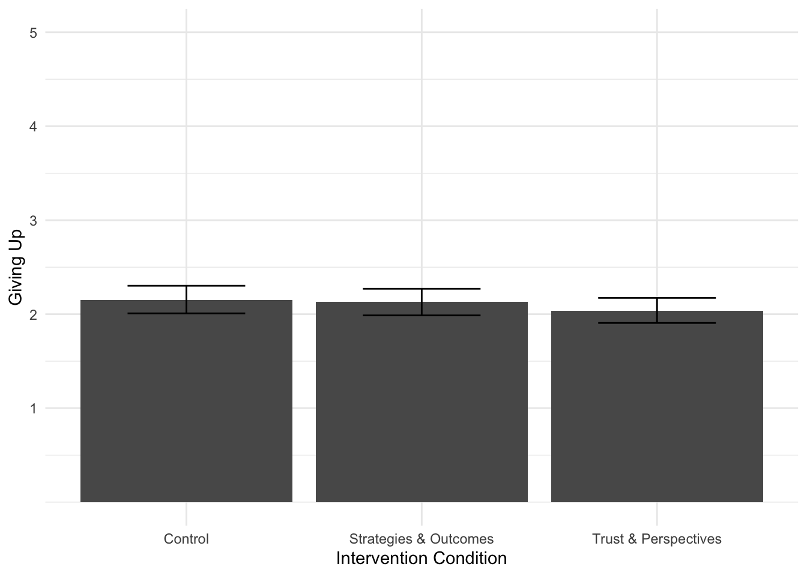
| deserve | |||
|---|---|---|---|
| Predictors | Estimates | std. Error | p |
| (Intercept) | 3.90 | 0.37 | <0.001 |
| Condition [Strategies & Outcomes] |
0.14 | 0.08 | 0.077 |
| Condition [Trust & Perspectives] |
0.15 | 0.08 | 0.057 |
| strike | -0.24 | 0.03 | <0.001 |
| ladder | 0.07 | 0.03 | 0.009 |
| income | -0.01 | 0.03 | 0.817 |
| workInsurancePercent 1 | 0.00 | 0.00 | 0.397 |
| yearsWork 1 | -0.00 | 0.00 | 0.564 |
| insurance Patient | 0.06 | 0.03 | 0.084 |
| trainingWhere | 0.06 | 0.15 | 0.705 |
| Random Effects | |||
| σ2 | 0.20 | ||
| τ00 ResponseId | 0.23 | ||
| ICC | 0.54 | ||
| N ResponseId | 336 | ||
| Observations | 671 | ||
| Marginal R2 / Conditional R2 | 0.065 / 0.569 | ||
| contrast | effect.size | SE | df | lower.CL | upper.CL |
|---|---|---|---|---|---|
| Control - Strategies & Outcomes | -0.3082832 | 0.1742781 | 326.5949 | -0.6511324 | 0.0345661 |
| Control - Trust & Perspectives | -0.3324387 | 0.1746481 | 326.5964 | -0.6760159 | 0.0111386 |
| Strategies & Outcomes - Trust & Perspectives | -0.0241555 | 0.1726288 | 326.5949 | -0.3637602 | 0.3154492 |
| contrast | effect.size | SE | df | lower.CL | upper.CL |
|---|---|---|---|---|---|
| strike1 - strike2 | 0.5390455 | 0.078655 | 359.3723 | 0.3843636 | 0.6937274 |
| contrast | estimate | SE | df | t.ratio | p.value |
|---|---|---|---|---|---|
| Control - Strategies & Outcomes | -0.1377719 | 0.0777924 | 326.5957 | -1.7710189 | 0.1809903 |
| Control - Trust & Perspectives | -0.1485670 | 0.0779430 | 327.0956 | -1.9060984 | 0.1385506 |
| Strategies & Outcomes - Trust & Perspectives | -0.0107951 | 0.0771473 | 327.0605 | -0.1399284 | 0.9892639 |
| vars | n | mean | sd | median | trimmed | mad | min | max | range | skew | kurtosis | se |
|---|---|---|---|---|---|---|---|---|---|---|---|---|
| 1 | 696 | 4.46408 | 0.6733381 | 5 | 4.555556 | 0 | 1 | 5 | 4 | -1.38022 | 2.996625 | 0.0255228 |
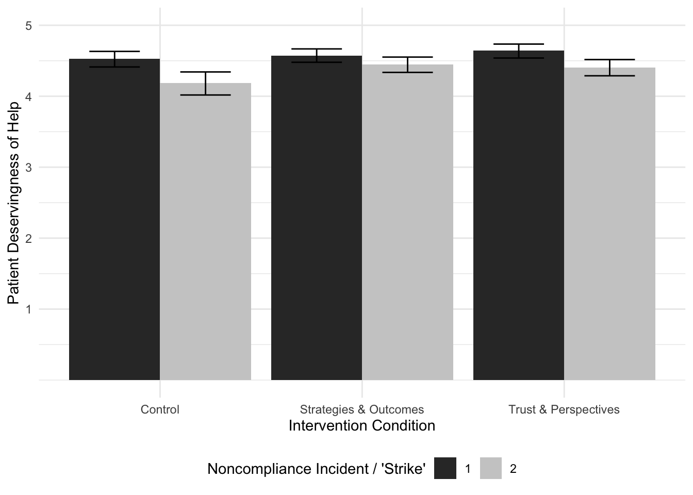
| motivated | |||
|---|---|---|---|
| Predictors | Estimates | CI | p |
| (Intercept) | 2.91 | 2.01 – 3.81 | <0.001 |
| Condition [Strategies & Outcomes] |
-0.05 | -0.24 – 0.14 | 0.627 |
| Condition [Trust & Perspectives] |
0.14 | -0.05 – 0.33 | 0.136 |
| strike | -0.33 | -0.43 – -0.24 | <0.001 |
| ladder | -0.04 | -0.11 – 0.02 | 0.202 |
| income | 0.03 | -0.04 – 0.11 | 0.386 |
| workInsurancePercent 1 | -0.00 | -0.01 – 0.00 | 0.110 |
| yearsWork 1 | 0.00 | -0.01 – 0.01 | 0.589 |
| insurance Patient | 0.08 | 0.00 – 0.16 | 0.050 |
| trainingWhere | 0.10 | -0.28 – 0.47 | 0.608 |
| Random Effects | |||
| σ2 | 0.40 | ||
| τ00 ResponseId | 0.31 | ||
| ICC | 0.44 | ||
| N ResponseId | 336 | ||
| Observations | 670 | ||
| Marginal R2 / Conditional R2 | 0.065 / 0.475 | ||
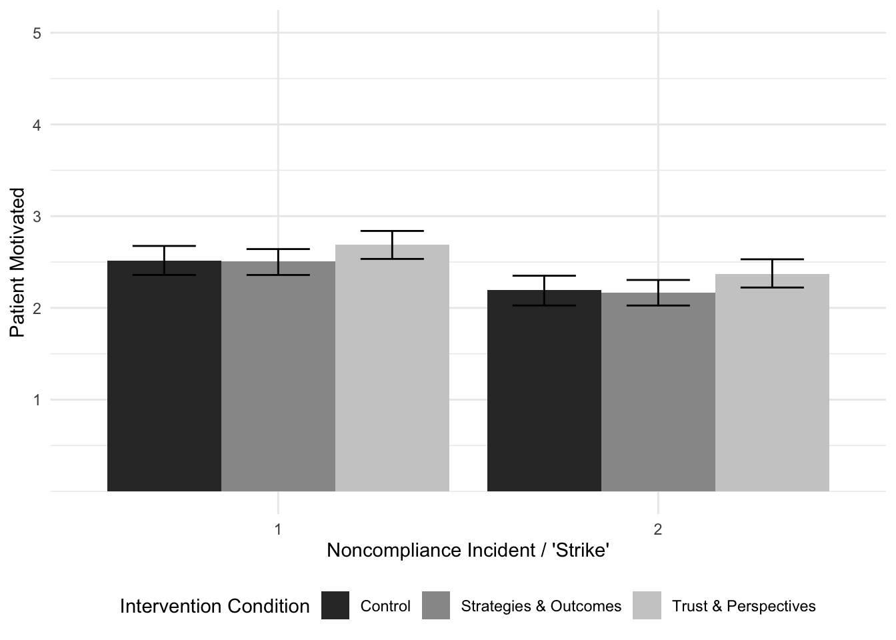
| intelligent | |||
|---|---|---|---|
| Predictors | Estimates | std. Error | p |
| (Intercept) | 3.19 | 0.39 | <0.001 |
| Condition [Strategies & Outcomes] |
0.15 | 0.08 | 0.066 |
| Condition [Trust & Perspectives] |
0.05 | 0.08 | 0.574 |
| strike | -0.21 | 0.03 | <0.001 |
| ladder | 0.01 | 0.03 | 0.701 |
| income | -0.00 | 0.03 | 0.986 |
| workInsurancePercent 1 | -0.00 | 0.00 | 0.754 |
| yearsWork 1 | 0.00 | 0.00 | 0.980 |
| insurance Patient | -0.04 | 0.03 | 0.261 |
| trainingWhere | 0.27 | 0.16 | 0.093 |
| Random Effects | |||
| σ2 | 0.18 | ||
| τ00 ResponseId | 0.28 | ||
| ICC | 0.60 | ||
| N ResponseId | 336 | ||
| Observations | 670 | ||
| Marginal R2 / Conditional R2 | 0.040 / 0.619 | ||
| contrast | effect.size | SE | df | lower.CL | upper.CL |
|---|---|---|---|---|---|
| Control - Strategies & Outcomes | -0.3525324 | 0.1917752 | 326.4029 | -0.7298037 | 0.0247390 |
| Control - Trust & Perspectives | -0.1077862 | 0.1918984 | 326.4531 | -0.4852998 | 0.2697274 |
| Strategies & Outcomes - Trust & Perspectives | 0.2447462 | 0.1900007 | 326.4029 | -0.1290342 | 0.6185266 |
| contrast | effect.size | SE | df | lower.CL | upper.CL |
|---|---|---|---|---|---|
| strike1 - strike2 | 0.4806349 | 0.0784646 | 353.4715 | 0.3263187 | 0.634951 |
| vars | n | mean | sd | median | trimmed | mad | min | max | range | skew | kurtosis | se |
|---|---|---|---|---|---|---|---|---|---|---|---|---|
| 1 | 695 | 3.153957 | 0.69842 | 3 | 3.13465 | 0 | 1 | 5 | 4 | 0.3890131 | 2.138495 | 0.0264926 |
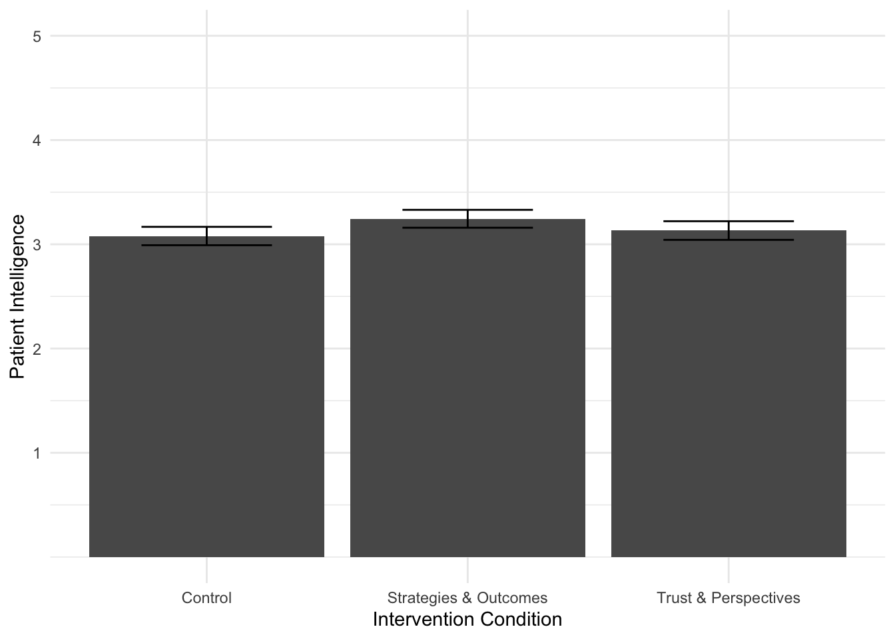
| attributions | |||
|---|---|---|---|
| Predictors | Estimates | CI | p |
| (Intercept) | 4.09 | 2.64 – 5.53 | <0.001 |
| Condition [Strategies & Outcomes] |
-0.03 | -0.34 – 0.27 | 0.839 |
| Condition [Trust & Perspectives] |
0.12 | -0.18 – 0.43 | 0.432 |
| strike | -0.59 | -0.73 – -0.46 | <0.001 |
| ladder | -0.08 | -0.19 – 0.02 | 0.110 |
| income | -0.02 | -0.15 – 0.10 | 0.704 |
| workInsurancePercent 1 | -0.00 | -0.01 – 0.00 | 0.490 |
| yearsWork 1 | -0.00 | -0.01 – 0.01 | 0.914 |
| insurance Patient | 0.16 | 0.03 – 0.29 | 0.014 |
| trainingWhere | 0.40 | -0.20 – 1.01 | 0.193 |
| Random Effects | |||
| σ2 | 0.77 | ||
| τ00 ResponseId | 0.95 | ||
| ICC | 0.55 | ||
| N ResponseId | 336 | ||
| Observations | 670 | ||
| Marginal R2 / Conditional R2 | 0.080 / 0.587 | ||
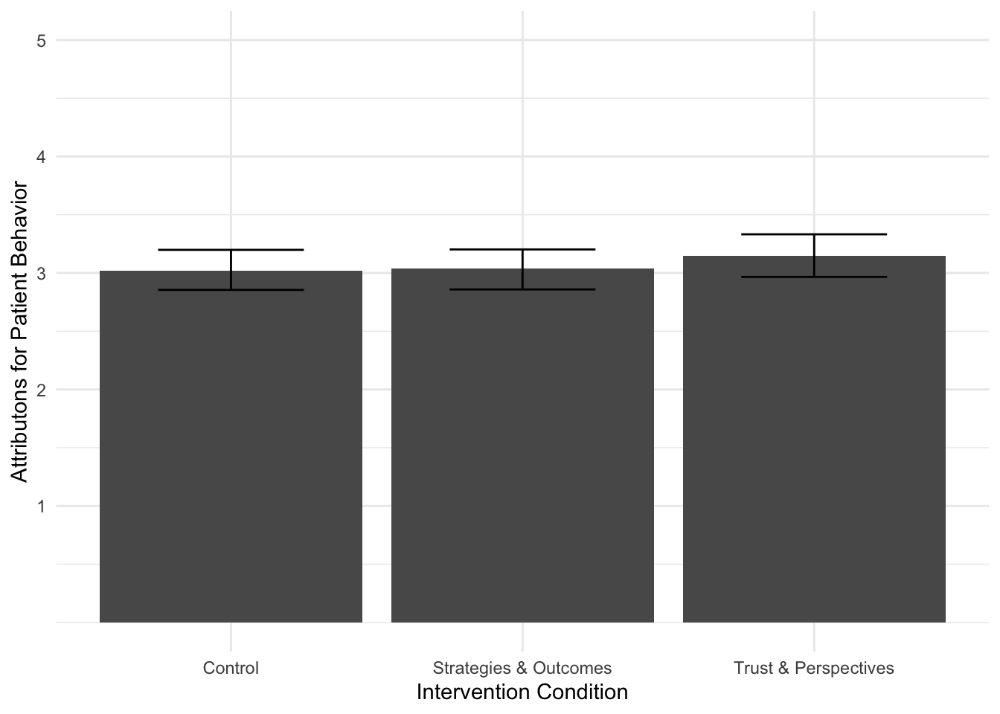
| treatAvg | |||
|---|---|---|---|
| Predictors | Estimates | std. Error | p |
| (Intercept) | 0.60 | 0.31 | 0.057 |
| Condition [Strategies & Outcomes] |
0.08 | 0.07 | 0.227 |
| Condition [Trust & Perspectives] |
0.12 | 0.07 | 0.067 |
| strike | 0.07 | 0.03 | 0.005 |
| ladder | 0.04 | 0.02 | 0.111 |
| income | -0.00 | 0.03 | 0.995 |
| workInsurancePercent 1 | 0.00 | 0.00 | 0.605 |
| yearsWork 1 | -0.00 | 0.00 | 0.904 |
| insurance Patient | 0.02 | 0.03 | 0.373 |
| trainingWhere | 0.20 | 0.13 | 0.129 |
| Random Effects | |||
| σ2 | 0.11 | ||
| τ00 ResponseId | 0.19 | ||
| ICC | 0.64 | ||
| N ResponseId | 336 | ||
| Observations | 671 | ||
| Marginal R2 / Conditional R2 | 0.027 / 0.650 | ||
| contrast | effect.size | SE | df | lower.CL | upper.CL |
|---|---|---|---|---|---|
| Control - Strategies & Outcomes | -0.2463797 | 0.2037242 | 326.6791 | -0.6471566 | 0.1543971 |
| Control - Trust & Perspectives | -0.3747506 | 0.2042443 | 326.6791 | -0.7765506 | 0.0270495 |
| Strategies & Outcomes - Trust & Perspectives | -0.1283709 | 0.2019457 | 326.6810 | -0.5256490 | 0.2689073 |
| contrast | effect.size | SE | df | lower.CL | upper.CL |
|---|---|---|---|---|---|
| strike1 - strike2 | -0.2184384 | 0.0774807 | 350.6622 | -0.3708238 | -0.0660531 |
| vars | n | mean | sd | median | trimmed | mad | min | max | range | skew | kurtosis | se |
|---|---|---|---|---|---|---|---|---|---|---|---|---|
| 1 | 697 | 1.408895 | 0.5466261 | 1.5 | 1.299642 | 0.7413 | 1 | 4 | 3 | 2.004894 | 4.849344 | 0.0207049 |
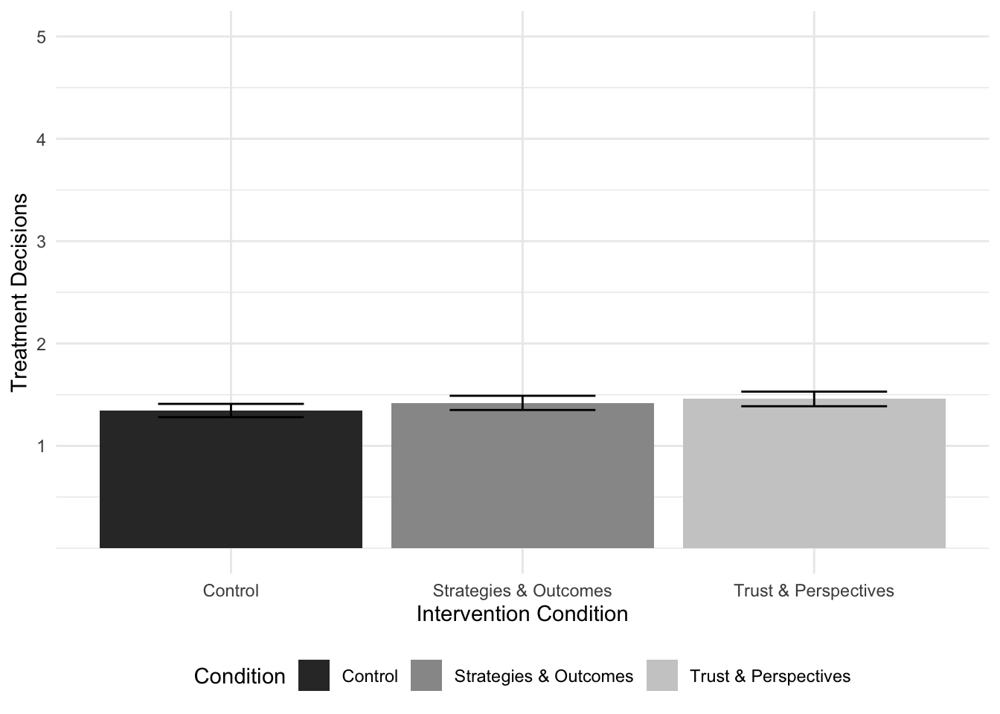
Perceived Patient Demographics
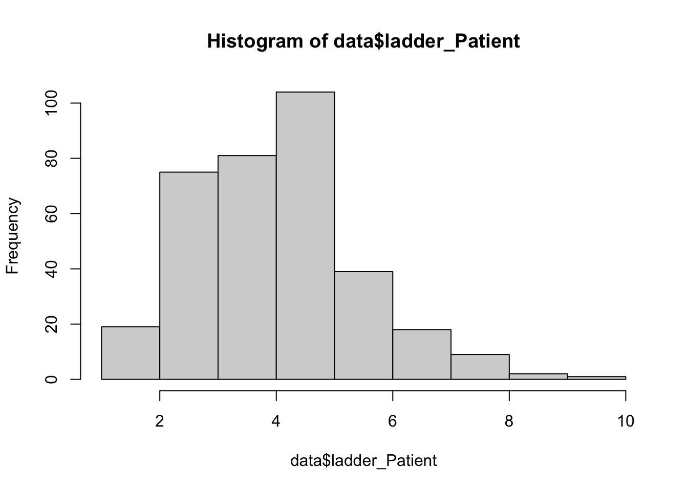
vars n mean sd median trimmed mad min max range skew kurtosis se
X1 1 348 4.5 1.44 4 4.41 1.48 1 10 9 0.55 0.48 0.08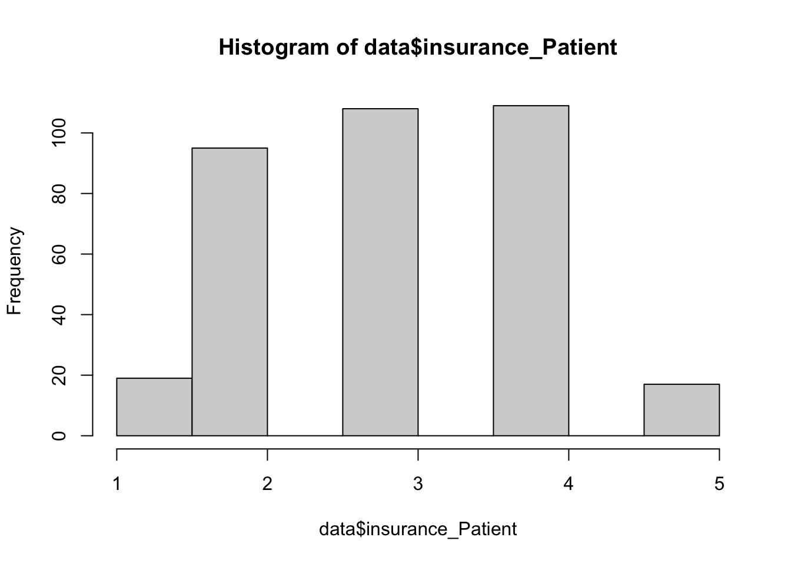
| Var1 | Freq |
|---|---|
| <$15k | 11 |
| $15-30k | 105 |
| $31-50k | 121 |
| $50-75k | 79 |
| $75-100k | 25 |
| $100-150k | 5 |
| vars | n | mean | sd | median | trimmed | mad | min | max | range | skew | kurtosis | se |
|---|---|---|---|---|---|---|---|---|---|---|---|---|
| 1 | 346 | 3.049133 | 1.038623 | 3 | 2.97482 | 1.4826 | 1 | 6 | 5 | 0.4284749 | -0.2010101 | 0.0558367 |
| Var1 | Freq |
|---|---|
| < HS | 36 |
| HS | 249 |
| College | 60 |
| Postgrad | 1 |
Equity Engagement
| raw_alpha | std.alpha | G6(smc) | average_r | S/N | ase | mean | sd | median_r |
|---|---|---|---|---|---|---|---|---|
| 0.8476115 | 0.8478356 | 0.8960133 | 0.4814998 | 5.571838 | 0.0120485 | -0.0033462 | 0.7571201 | 0.3612854 |
| equity_beh | |||
| Predictors | Estimates | CI | p |
| (Intercept) | -0.13 | -0.72 – 0.47 | 0.676 |
| Condition [Strategies & Outcomes] |
0.10 | -0.09 – 0.30 | 0.284 |
| Condition [Trust & Perspectives] |
0.04 | -0.15 – 0.23 | 0.695 |
| yearsWork 1 | -0.01 | -0.01 – 0.00 | 0.081 |
| workInsurancePercent 1 | -0.00 | -0.01 – 0.00 | 0.097 |
| trainingWhere | 0.51 | 0.14 – 0.89 | 0.007 |
| Observations | 344 | ||
| R2 / R2 adjusted | 0.046 / 0.032 | ||
Demographics
Personal
| gender | total | percentage |
|---|---|---|
| Male | 217 | 51.7899761 |
| Female | 124 | 29.5942721 |
| Non-conform | 3 | 0.7159905 |
| NA | 2 | 0.4773270 |
| NA | 73 | 17.4224344 |
| race | total | percentage |
|---|---|---|
| White | 188 | 44.868735 |
| Asian | 99 | 23.627685 |
| Black | 8 | 1.909308 |
| Latinx | 17 | 4.057279 |
| East Asian | 10 | 2.386635 |
| Multiracial | 10 | 2.386635 |
| Other | 13 | 3.102625 |
| NA | 74 | 17.661098 |
| vars | n | mean | sd | median | trimmed | mad | min | max | range | skew | kurtosis | se |
|---|---|---|---|---|---|---|---|---|---|---|---|---|
| 1 | 343 | 3.912536 | 1.466364 | 4 | 3.883636 | 1.4826 | 1 | 7 | 6 | 0.1286987 | -0.497284 | 0.0791762 |
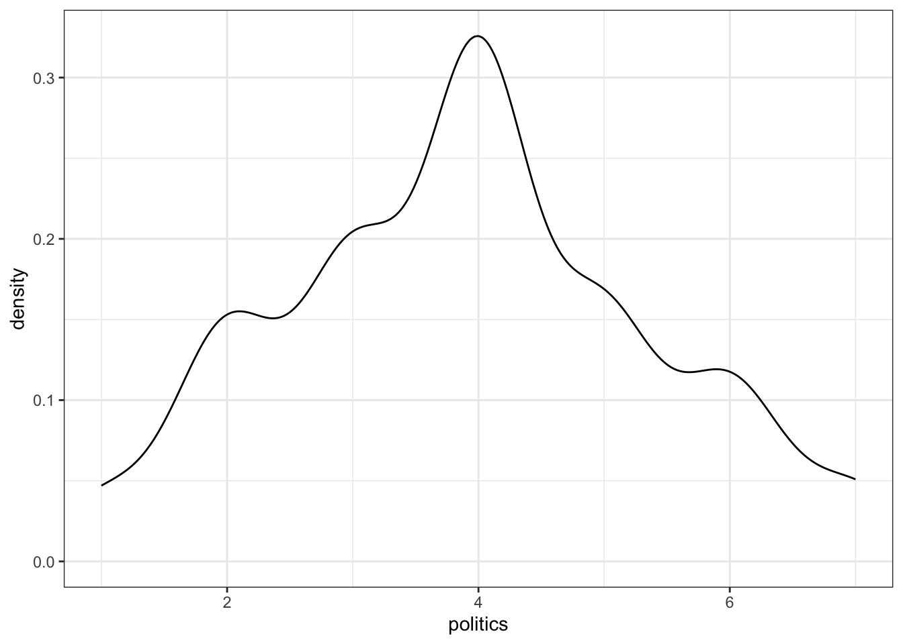
| income | total | percentage |
|---|---|---|
| <15k | 2 | 0.4773270 |
| 15-30 | 3 | 0.7159905 |
| 30-50 | 4 | 0.9546539 |
| 50-75 | 13 | 3.1026253 |
| 75-100 | 23 | 5.4892601 |
| 100-150 | 44 | 10.5011933 |
| 150+ | 249 | 59.4272076 |
| NA | 81 | 19.3317422 |
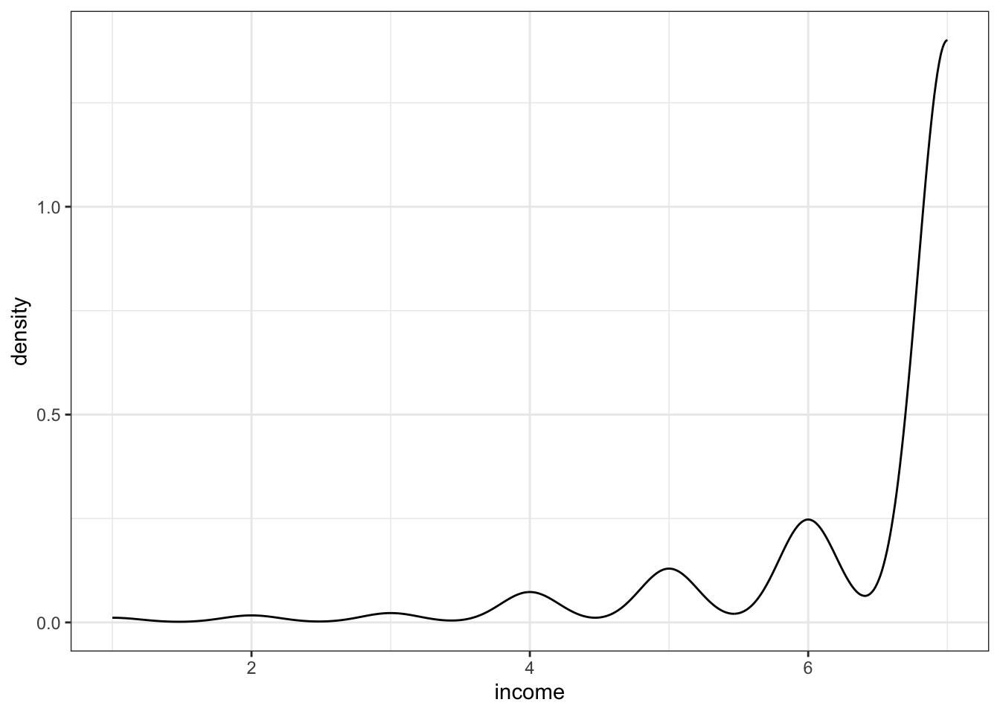
| vars | n | mean | sd | median | trimmed | mad | min | max | range | skew | kurtosis | se |
|---|---|---|---|---|---|---|---|---|---|---|---|---|
| 1 | 338 | 6.491124 | 1.056944 | 7 | 6.75 | 0 | 1 | 7 | 6 | -2.562629 | 7.11487 | 0.0574902 |
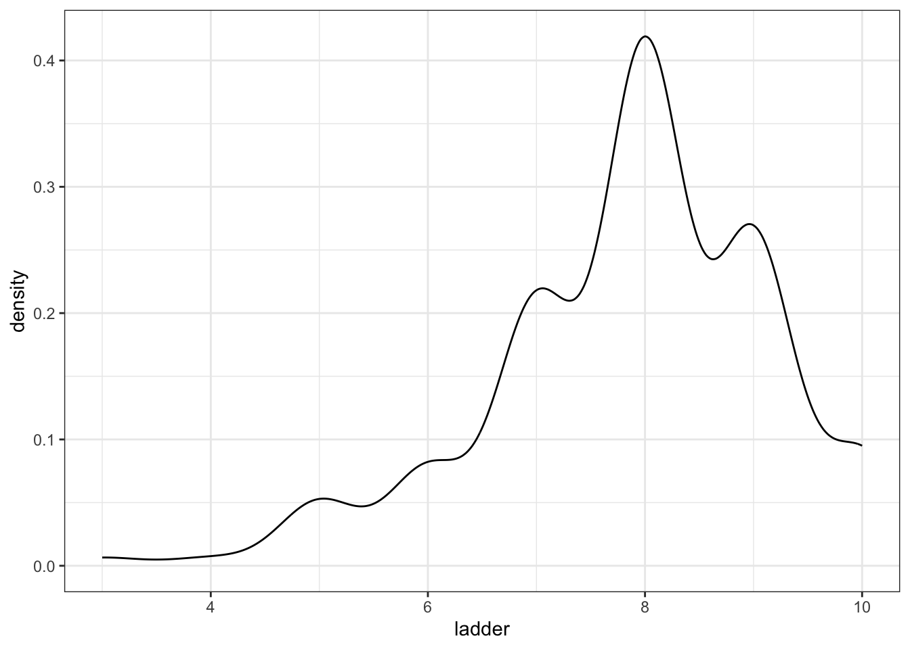
| vars | n | mean | sd | median | trimmed | mad | min | max | range | skew | kurtosis | se |
|---|---|---|---|---|---|---|---|---|---|---|---|---|
| 1 | 346 | 7.878613 | 1.290884 | 8 | 7.964029 | 1.4826 | 3 | 10 | 7 | -0.7416858 | 0.8687872 | 0.0693984 |
Professional
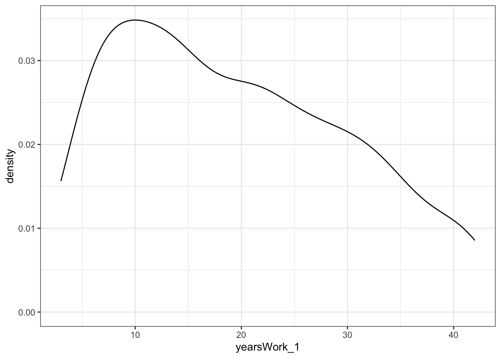
| vars | n | mean | sd | median | trimmed | mad | min | max | range | skew | kurtosis | se |
|---|---|---|---|---|---|---|---|---|---|---|---|---|
| 1 | 346 | 19.60694 | 10.72915 | 18 | 18.98561 | 11.8608 | 3 | 42 | 39 | 0.3861953 | -0.9339356 | 0.5768026 |
| trainingWhere | total | percentage |
|---|---|---|
| 1 | 330 | 78.758950 |
| 2 | 16 | 3.818616 |
| NA | 73 | 17.422434 |
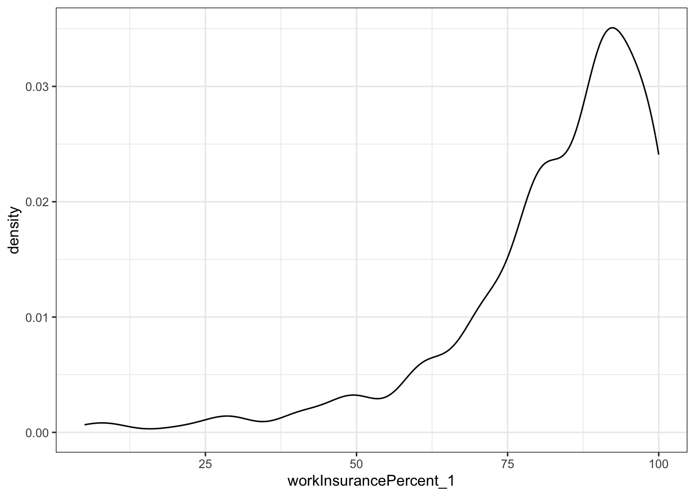
| vars | n | mean | sd | median | trimmed | mad | min | max | range | skew | kurtosis | se | |
|---|---|---|---|---|---|---|---|---|---|---|---|---|---|
| X1 | 1 | 344 | 82.75581 | 17.00227 | 89 | 85.50725 | 13.3434 | 5 | 100 | 95 | -1.765273 | 3.820768 | 0.916701 |
Additional Outcomes
Professional Fulfillment Index
| raw_alpha | std.alpha | G6(smc) | average_r | S/N | ase | mean | sd | median_r |
|---|---|---|---|---|---|---|---|---|
| 0.9435036 | 0.944853 | 0.9663087 | 0.5171027 | 17.13334 | 0.004149 | 2.236761 | 0.7176406 | 0.5024677 |
| PFI | |||
| Predictors | Estimates | CI | p |
| (Intercept) | 2.72 | 2.62 – 2.83 | <0.001 |
| Condition [Strategies & Outcomes] |
0.01 | -0.08 – 0.11 | 0.779 |
| Condition [Trust & Perspectives] |
0.01 | -0.09 – 0.11 | 0.833 |
| yearsWork 1 | -0.01 | -0.01 – -0.00 | <0.001 |
| Observations | 334 | ||
| R2 / R2 adjusted | 0.041 / 0.032 | ||
| vars | n | mean | sd | median | trimmed | mad | min | max | range | skew | kurtosis | se |
|---|---|---|---|---|---|---|---|---|---|---|---|---|
| 1 | 335 | 2.591978 | 0.3820673 | 2.5625 | 2.572723 | 0.37065 | 1.625 | 4.3125 | 2.6875 | 0.6371008 | 1.386878 | 0.0208746 |
| raw_alpha | std.alpha | G6(smc) | average_r | S/N | ase | mean | sd | median_r |
|---|---|---|---|---|---|---|---|---|
| 0.9171283 | 0.9186516 | 0.9140618 | 0.6530349 | 11.29281 | 0.00634 | 3.476177 | 0.8712248 | 0.6556578 |
| PFI_PF | |||
| Predictors | Estimates | CI | p |
| (Intercept) | 3.31 | 3.08 – 3.55 | <0.001 |
| Condition [Strategies & Outcomes] |
0.01 | -0.21 – 0.23 | 0.931 |
| Condition [Trust & Perspectives] |
0.13 | -0.09 – 0.36 | 0.255 |
| yearsWork 1 | 0.01 | -0.00 – 0.01 | 0.158 |
| Observations | 341 | ||
| R2 / R2 adjusted | 0.010 / 0.002 | ||
| vars | n | mean | sd | median | trimmed | mad | min | max | range | skew | kurtosis | se |
|---|---|---|---|---|---|---|---|---|---|---|---|---|
| 1 | 342 | 3.476121 | 0.8660715 | 3.666667 | 3.502433 | 0.9884 | 1 | 5 | 4 | -0.2899873 | -0.4098462 | 0.0468318 |
| raw_alpha | std.alpha | G6(smc) | average_r | S/N | ase | mean | sd | median_r |
|---|---|---|---|---|---|---|---|---|
| 0.903605 | 0.9035905 | 0.8877431 | 0.700877 | 9.372426 | 0.0077514 | 2.368738 | 0.8893554 | 0.710759 |
| PFI_exhaustion | |||
| Predictors | Estimates | CI | p |
| (Intercept) | 2.72 | 2.49 – 2.96 | <0.001 |
| Condition [Strategies & Outcomes] |
0.04 | -0.19 – 0.27 | 0.736 |
| Condition [Trust & Perspectives] |
-0.06 | -0.28 – 0.17 | 0.628 |
| yearsWork 1 | -0.02 | -0.03 – -0.01 | <0.001 |
| Observations | 344 | ||
| R2 / R2 adjusted | 0.047 / 0.039 | ||
| vars | n | mean | sd | median | trimmed | mad | min | max | range | skew | kurtosis | se |
|---|---|---|---|---|---|---|---|---|---|---|---|---|
| 1 | 345 | 2.368841 | 0.8906451 | 2.25 | 2.304152 | 0.7413 | 1 | 5 | 4 | 0.7013383 | 0.4051393 | 0.0479507 |
| raw_alpha | std.alpha | G6(smc) | average_r | S/N | ase | mean | sd | median_r |
|---|---|---|---|---|---|---|---|---|
| 0.9442742 | 0.9446988 | 0.9491097 | 0.7400661 | 17.08279 | 0.0042951 | 1.859942 | 0.7867018 | 0.7520566 |
| PFI_disengagement | |||
| Predictors | Estimates | CI | p |
| (Intercept) | 2.16 | 1.95 – 2.37 | <0.001 |
| Condition [Strategies & Outcomes] |
0.02 | -0.18 – 0.22 | 0.848 |
| Condition [Trust & Perspectives] |
-0.07 | -0.27 – 0.13 | 0.515 |
| yearsWork 1 | -0.01 | -0.02 – -0.01 | <0.001 |
| Observations | 339 | ||
| R2 / R2 adjusted | 0.042 / 0.033 | ||
| vars | n | mean | sd | median | trimmed | mad | min | max | range | skew | kurtosis | se |
|---|---|---|---|---|---|---|---|---|---|---|---|---|
| 1 | 340 | 1.862255 | 0.780727 | 1.916667 | 1.765319 | 0.86485 | 1 | 4.666667 | 3.666667 | 0.9281244 | 0.710158 | 0.0423409 |
Trainings
| sdoh1 | |||
| Predictors | Estimates | CI | p |
| (Intercept) | 3.56 | 2.76 – 4.36 | <0.001 |
| Condition [Strategies & Outcomes] |
0.08 | -0.18 – 0.33 | 0.561 |
| Condition [Trust & Perspectives] |
-0.01 | -0.27 – 0.25 | 0.927 |
| yearsWork 1 | -0.01 | -0.02 – -0.00 | 0.027 |
| workInsurancePercent 1 | -0.00 | -0.01 – 0.00 | 0.581 |
| trainingWhere | 0.63 | 0.13 – 1.13 | 0.014 |
| Observations | 344 | ||
| R2 / R2 adjusted | 0.036 / 0.022 | ||
| sdoh2 | |||
| Predictors | Estimates | CI | p |
| (Intercept) | 3.05 | 2.05 – 4.04 | <0.001 |
| Condition [Strategies & Outcomes] |
0.16 | -0.16 – 0.48 | 0.334 |
| Condition [Trust & Perspectives] |
0.16 | -0.16 – 0.49 | 0.326 |
| yearsWork 1 | -0.01 | -0.02 – 0.00 | 0.112 |
| workInsurancePercent 1 | -0.01 | -0.02 – -0.00 | 0.027 |
| trainingWhere | 0.73 | 0.11 – 1.36 | 0.022 |
| Observations | 344 | ||
| R2 / R2 adjusted | 0.045 / 0.031 | ||
| culturalCompetancy1 | |||
| Predictors | Estimates | CI | p |
| (Intercept) | 4.19 | 3.38 – 5.00 | <0.001 |
| Condition [Strategies & Outcomes] |
0.09 | -0.17 – 0.36 | 0.486 |
| Condition [Trust & Perspectives] |
-0.02 | -0.28 – 0.25 | 0.899 |
| yearsWork 1 | -0.02 | -0.03 – -0.01 | 0.002 |
| workInsurancePercent 1 | -0.01 | -0.01 – -0.00 | 0.036 |
| trainingWhere | 0.39 | -0.12 – 0.89 | 0.137 |
| Observations | 344 | ||
| R2 / R2 adjusted | 0.054 / 0.040 | ||
| culturalCompetancy2 | |||
| Predictors | Estimates | CI | p |
| (Intercept) | 2.85 | 1.85 – 3.84 | <0.001 |
| Condition [Strategies & Outcomes] |
0.21 | -0.11 – 0.54 | 0.191 |
| Condition [Trust & Perspectives] |
0.26 | -0.07 – 0.58 | 0.119 |
| yearsWork 1 | -0.00 | -0.02 – 0.01 | 0.603 |
| workInsurancePercent 1 | -0.01 | -0.02 – -0.00 | 0.011 |
| trainingWhere | 0.83 | 0.20 – 1.45 | 0.009 |
| Observations | 343 | ||
| R2 / R2 adjusted | 0.050 / 0.036 | ||
Petitions
| petition1 | |||
| Predictors | Odds Ratios | CI | p |
| (Intercept) | 0.21 | 0.04 – 1.20 | 0.079 |
| Condition [Strategies & Outcomes] |
1.26 | 0.70 – 2.29 | 0.449 |
| Condition [Trust & Perspectives] |
0.80 | 0.42 – 1.50 | 0.488 |
| workInsurancePercent 1 | 1.00 | 0.98 – 1.01 | 0.686 |
| trainingWhere | 1.87 | 0.61 – 5.24 | 0.245 |
| Observations | 343 | ||
| R2 Tjur | 0.012 | ||
| petition2 | |||
| Predictors | Odds Ratios | CI | p |
| (Intercept) | 0.16 | 0.03 – 0.81 | 0.029 |
| Condition [Strategies & Outcomes] |
1.14 | 0.67 – 1.97 | 0.625 |
| Condition [Trust & Perspectives] |
1.06 | 0.61 – 1.83 | 0.840 |
| workInsurancePercent 1 | 1.00 | 0.99 – 1.01 | 0.881 |
| trainingWhere | 3.01 | 1.09 – 9.10 | 0.038 |
| Observations | 343 | ||
| R2 Tjur | 0.014 | ||
Donation
| donation_1 | |||
| Predictors | Estimates | CI | p |
| (Intercept) | 66.95 | 47.84 – 86.07 | <0.001 |
| Condition [Strategies & Outcomes] |
-0.56 | -6.75 – 5.63 | 0.859 |
| Condition [Trust & Perspectives] |
-3.49 | -9.68 – 2.70 | 0.269 |
| yearsWork 1 | -0.15 | -0.39 – 0.09 | 0.217 |
| workInsurancePercent 1 | 0.13 | -0.02 – 0.28 | 0.092 |
| trainingWhere | 2.90 | -9.11 – 14.90 | 0.636 |
| Observations | 344 | ||
| R2 / R2 adjusted | 0.016 / 0.001 | ||
| donation_2 | |||
| Predictors | Estimates | CI | p |
| (Intercept) | 33.05 | 13.93 – 52.16 | 0.001 |
| Condition [Strategies & Outcomes] |
0.56 | -5.63 – 6.75 | 0.859 |
| Condition [Trust & Perspectives] |
3.49 | -2.70 – 9.68 | 0.269 |
| yearsWork 1 | 0.15 | -0.09 – 0.39 | 0.217 |
| workInsurancePercent 1 | -0.13 | -0.28 – 0.02 | 0.092 |
| trainingWhere | -2.90 | -14.90 – 9.11 | 0.636 |
| Observations | 344 | ||
| R2 / R2 adjusted | 0.016 / 0.001 | ||